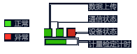
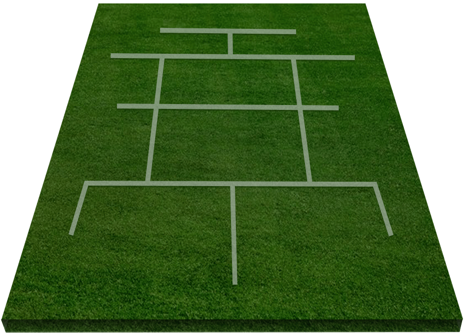

上海地面观测业务状态监控
国家气象站


{{currentInfo['station_name'] }}国家气象站
正常
异常
{{currentInfo['station_name'] }}国家气象站
正常
异常
数据到报描述
CTS
国家局
- {{ currentInfo['station_name'] }}站
- 本站IP：{{ currentInfo['station_ip'] }}
- 产品时间：{{ currentInfo['product_time'] }}
区局路由器
通信{{currentInfo['router_conty']==="normal"?"正常":"异常"}}
市局路由器
通信{{currentInfo['router_city']==="normal"?"正常":"异常"}}
- 到达时间：{{ currentInfo['cts_arrive_time'] }}
- 未收到
- 逾限
{{ currentInfo['cts_des'] }}
{{ currentInfo['nation_des'] }}
- 发送时间：{{ currentInfo['cts_send_time'] }}
- 未收到
- 逾限
正常
异常
未收到
数据到报统计
您确定继续轮播？
您确定停止轮播？请选择固定显示的信息
{{ detailData['deviceName'] }}
{{ detailData['station'] }} 检测时间: {{ detailData['time'] }}
| 序号 | 名称 | 状态 |
|---|---|---|
| {{ index + 1 }} | {{ item['name'] }} | {{ item["state"] }} |